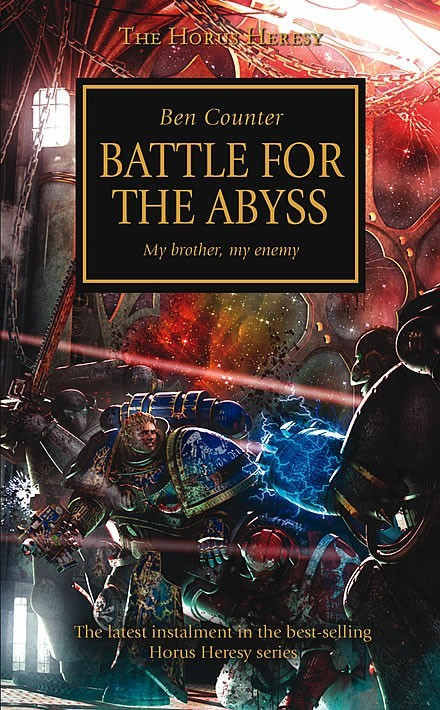

BATTLE FOR THE ABYSS

Author: Ben Counter
Format: Novel
The Word Bearers launch the Furious Abyss, a massive warship designed to destroy Macragge and cripple the Ultramarines. A ragtag group of loyalist Space Marines from various Legions pursue the vessel through the warp, racing to stop it before it reaches Ultramar.
Introduction reviewed against Black Library’s description on 2026-09-27. The publisher page may contain spoilers.
Publication facts: publisher source, checked 2026-09-26.
Open this work in the interactive Archive to track reading progress and explore related works.